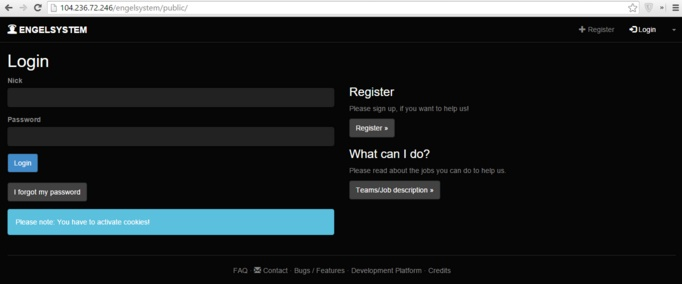
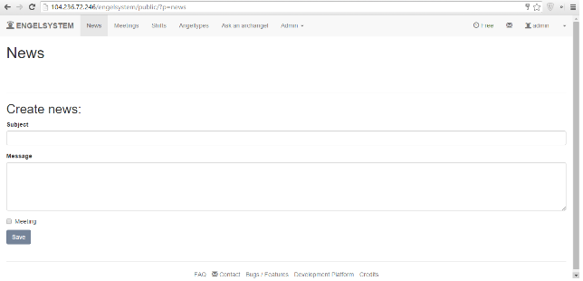
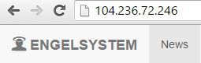

Today, I decided to set up Engelsystem on a clean server as a task for Google Code-in. My first impression when looking at the PHP application was that it is a well-built MVC app. It seems to have everything an event manager could want. When I looked at the README, all the instructions were in German, but I decided to follow the gist of it anyways. I will be telling you how to setup the application step by step in English on Ubuntu 14.04 LTS x64.
The first you want to do is to setup LAMP stack (linux, apache, mysql, and php). From DigitalOcean, you may just select the LAMP One-click install app. Otherwise, please follow the tutorial here on how to set up lamp on Ubuntu 14.04 LTS x64. If you are running this app on a different operating system, a quick Google search will provide you with installation steps.
Afterwards, you may install git by these commands:
apt-get update
apt-get install git -y
First, clone the repository (the recursive parameter allows us to clone the submodules):
git clone --recursive https://github.com/engelsystem/engelsystem.git
Note the absolute path of the engelsystem directory. For example, mine is /root.
Next, configure your MySQL engelsystem database:
mysql -u root -p
[Enter your password]
CREATE DATABASE engelsystem;
use engelsystem;
source [path to engelsystem]/engelsystem/db/install.sql;
source [path to engelsystem]/engelsystem/db/update.sql;
exit;
Go to engelsystem/config and copy the default config into config.php. Modify the new file to match your MySQL credentials.
Move the app to your /var/www/html/ directory by typing mv ./engelsystem /var/www/html (alternatively create a symlink to your current directory). Go to your browser and type in [serverhost]/engelsystem/public to see the application in action.

To login, type use the following credentials:
Username: admin
Password: asdfasdf
Be sure to change your password for security reasons.

We must make sure to point our apache2 document root to the Engelsystem directory to prevent any user from accessing anything other than the public/ directory for security reasons. Do this by modifying the apache2 configuration file (assuming you are running this on a server hosting no other sites):
apt-get install nano -y
nano /etc/apache2/sites-available/000-default.conf
Change DocumentRoot /var/www/html into DocumentRoot /var/www/html/engelsystem/public. Restart apache by typing service apache2 restart. See the result of your page by going to your host in your browser.

If you made it this far, congratulations! You have successfully set up Engelsystem and can use it to manage your event.